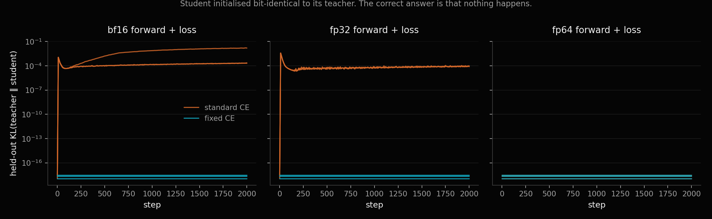

Recreating Interesting AI Papers: The Most-Used Function in Deep Learning Has Been Quietly Rounding Its Gradient to Zero
A recreation of A Fix for Softmax and Cross-Entropy (Barron, Gnanapragasam and Tschannen, Google DeepMind, October 2026). PyTorch on a CPU, about an hour of wall-clock, every number below produced by me in this repo.
Every language model, every classifier, every distillation pipeline ends in the same three lines: subtract the max logit, exponentiate, normalize, take the log. We have been writing it this way since before most of the people using it were in university. It is the stable version. Everyone knows it is the stable version.
The paper’s claim is that it is not quite stable enough, and that the failure is not a rounding nuisance but a structural one: past a certain confidence, the gradient on the correct class becomes exactly zero while the gradients on the wrong classes do not. The gradient stops summing to zero. Adam, which normalizes everything it touches, takes that tiny asymmetry and turns it into a full-sized step.
I wanted to see it with my own eyes. So I rebuilt it.
The bug, in one line of arithmetic
Take logits z = [9, -9, -9] with the target in slot 0, in fp32. The standard log-softmax computes log(1 + 2e^-18). In fp32, 1 + 3e-8 is 1. The log is 0. The loss is 0, and the gradient on the target is 0.
The gradients on the two wrong classes, meanwhile, are computed from a different expression that does not go through that 1 +, and they come out as a perfectly healthy 1.5e-8 each. So the gradient vector is [0, 1.5e-8, 1.5e-8]. It sums to 3e-8, not zero. It is pushing the logits down uniformly, which is not a direction that any loss in the world asked for.
The paper calls this Softmax Collapse. It happens whenever the margin m = z_t - logsumexp(z_others) exceeds a precision cliff: about 5.5 in bf16, 16.6 in fp32, 36.7 in fp64. Remember those numbers.
The fix is almost embarrassingly small. Never put the 1 inside the sum. Set the max (or target) slot to a constant zero, sum only the other exponentials, and add the 1 back with log1p:
shifted = torch.where(is_t, 0, z - z_t)
s = torch.where(is_t, 0, shifted.exp()).sum(-1)
loss = torch.log1p(s) # = softplus(-m)That is it. Run my version on the same input and you get loss 3.046e-8 and gradient [-3.046e-8, 1.523e-8, 1.523e-8], which is the paper’s number to four digits and sums to exactly zero.
There is a sibling bug for soft targets, Softmax Cancellation: in distillation the gradient is q - p, two nearly-equal probabilities subtracted, and that subtraction eats your precision. The paper rewrites the gradient in terms of z_S - z_T directly so the cancellation happens analytically instead of numerically. On their example (z_T = [2, 1, 0], student perturbed by 1e-7) my implementation of their formula matches the exact fp64 answer to eight significant digits. PyTorch’s built-in is off by 30 to 65 percent per component.
Why a zero gradient is not harmless
The obvious objection: the gradient is 1e-8. Who cares if it is wrong?
Adam cares. Adam divides by the root-mean-square of recent gradients, so a 1e-8 gradient with a consistent sign produces an update just as large as a 1.0 gradient would. The asymmetry that Softmax Collapse introduces is small in absolute terms and enormous in Adam’s units.
The paper also derives where AdamW should settle if nothing goes wrong. At equilibrium the normalized gradient balances weight decay, and the per-example gradient there is roughly Adam’s epsilon. Since the gradient is about e^-m, the margin stops growing at m* ≈ log(1/ε): 18.4 for the default ε = 1e-8, 27.6 for 1e-12, 36.8 for 1e-16.
Notice that 18.4 is above the fp32 cliff of 16.6. The default AdamW settings ask fp32 softmax to go somewhere it cannot follow.
The experiment
Following the paper: modular addition, a + b mod 31, half the table for training, a one-layer four-head width-64 ReLU transformer with no LayerNorm, full-batch AdamW at lr = 1e-3, β = (0.9, 0.98), weight decay 1. I swept the loss (standard vs fixed), the precision of the logits entering the loss (bf16, fp32, fp64), and Adam’s epsilon (1e-8, 1e-12, 1e-16), five seeds each. Ninety runs. The GPU on this machine was occupied by somebody else’s job, so everything ran single-threaded on CPU, 28 at a time.
One deviation up front, because the last post taught me to state them before the results and not after: my transformer groks much more slowly than theirs. The paper sees generalization within 10k steps; mine takes 10k to 35k, and some seeds not at all. The paper does not specify initialization or embedding details, and grokking is notoriously sensitive to both. Rather than tune my way toward their headline, I kept their hyperparameters and trained for 40k steps instead of 10k.
The slingshot
![Two stacked line charts over 40,000 training steps, three seeds each. Top: mean training margin. The standard cross-entropy runs in orange rise to the fp32 precision cliff at 16.6, collapse to about 5, and climb again, repeating roughly thirty times across the run. The fixed cross-entropy runs in cyan pass straight through the cliff and sit flat at about 17, just under the dotted AdamW equilibrium line at 18.4. Bottom: test accuracy, where both losses sit near 0.5 for thousands of steps before rising to 1.0, except one cyan seed that stays at about 0.57.](../assets/blog/softmax/fig1_slingshot.png)
ε = 1e-8, three seeds.This is the plot I built the whole thing for, and it came out cleaner than I expected.
The orange lines are standard cross-entropy. The margin climbs toward the AdamW equilibrium, hits the fp32 cliff at about 16, the target gradient vanishes, the non-zero-sum gradient pushes every logit the wrong way, Adam amplifies it, and the margin collapses to 5. Then it climbs again. Then it collapses again. Every run, every seed, like clockwork: I counted 24 to 31 full collapses per 40k-step run across all fifteen fp32 standard-CE runs, and exactly one, in one run, across the fifteen fixed ones.
The cyan lines are the fixed loss. They go straight through the cliff as if it were not there and park at about 17, just under the predicted 18.4.
This sawtooth has a name in the literature, the “slingshot mechanism”, and it has been studied as if it were an interesting property of adaptive optimizers. The paper’s quiet, slightly devastating point is that at least this version of it is a floating-point bug.
The equilibrium, everywhere

log(1/ε); dashed lines are the precision cliffs.| logits | loss | ε = 1e-8 | ε = 1e-12 | ε = 1e-16 |
|---|---|---|---|---|
| bf16 | standard | 4.4 | 4.4 | 4.4 |
| bf16 | fixed | 17.0 | 26.8 | 36.2 |
| fp32 | standard | 12.3 | 12.9 | 12.3 |
| fp32 | fixed | 17.1 | 26.7 | 35.0 |
| fp64 | standard | 17.1 | 26.6 | 34.8 |
| fp64 | fixed | 17.2 | 26.6 | 36.1 |
| predicted | 18.4 | 27.6 | 36.8 | |
| paper (fixed) | 17.9 | 27.4 | 36.8 |
This is the result I trust most. With the fix, the margin lands within about a unit of log(1/ε) in every precision, including bf16, a format with eight bits of mantissa that the standard loss cannot push past 4.4. Standard fp32 stalls around 12–13, which is almost exactly the paper’s 12.7–15.1. A theory with one free symbol, a fix with four lines, and they agree with each other across a factor of 108 in epsilon.
The distillation test, which I think is the best experiment in the paper
Start a student as a bit-exact copy of its teacher and distill. The correct gradient is zero. Not small. Zero. The student should never move, for as long as you train it.

T = 4, a+b mod 53. Three seeds per line. The flat cyan floor is the KL evaluator’s own noise at 2e-18, reached by a student whose weights have not moved at all.| forward + loss | loss | |grad| at step 0 | max weight drift | final KL |
|---|---|---|---|---|
| bf16 | standard | 8e-6 | 0.65 | 5e-3 |
| bf16 | fixed | 0 | 0 | 0 |
| fp32 | standard | 1e-10 | 0.15 | 9e-5 |
| fp32 | fixed | 0 | 0 | 0 |
| fp64 | standard | 3e-19 | 0 | 0 |
In fp32, the standard loss produces a gradient of 1e-10 from a model that is already perfect. Adam sees a gradient with a consistent sign and does what Adam does. Weights wander by up to 0.15; in bf16, one seed’s weights move by 1.6. The fixed loss returns a gradient of exactly 0.0, and two thousand steps later the student is still bit-identical to its teacher.
I find this experiment beautiful because it needs no theory at all to read. The right answer is “nothing happens”. Something happens.
The catch
Here is where my recreation and the paper part ways.
The paper’s Table 1 shows the fix also wins on test accuracy: around 99–100% versus 93–96% for standard CE. I did not reproduce that. In my fp32 runs, standard CE ends at 88–98% mean test accuracy and the fixed loss at 79–83%.
The spread is the story. Two of my five seeds (1 and 3) fail to grok within 40k steps under the fixed loss, in every precision and every epsilon, and sit at about 57%. Under standard fp32 CE, those same seeds mostly do grok. Looking at Fig 1 again, the honest reading is that in my slower-grokking setup, the slingshot collapses act like a periodic kick: each one knocks the margin down from the memorizing plateau, and some of those kicks seem to help the network find the generalizing solution. The fixed loss removes the kicks, and a couple of seeds just sit at equilibrium, memorizing contentedly.
That is consistent with the older literature, which noticed that slingshots and grokking tend to show up together. It is not consistent with the paper’s headline. I do not think this contradicts the paper’s core claims: the bug is real, the fix is right, and the equilibrium theory is spot-on. But “removing a numerical bug also makes your model generalize better” is a stronger claim, and on my architecture with five seeds it did not hold. It may well hold on theirs, where grokking happens before the margin ever reaches the cliff often enough to matter. I would want twenty seeds and their exact model before saying more.
In distillation the paper also reports accuracy degrading under the standard loss. Mine stayed at 100% throughout: the drift is real, but a+b mod 53 has enough margin that it never flipped an argmax.
What this is, and what it is not
- It is a faithful recreation of the method. Both worked examples in the paper reproduce to the printed digit.
- It is a strong reproduction of the mechanism: the slingshot is a precision artifact, and the fix lets AdamW reach the
log(1/ε)equilibrium the paper predicts, in bf16, fp32 and fp64. - It is a strong reproduction of the distillation result: zero gradient in, zero drift out.
- It is not a reproduction of the grokking accuracy gains. My transformer differs in unspecified details, groks 2 to 3 times slower, and I trained 4 times longer than the paper. Five seeds, one task.
- It is PyTorch on CPU, not the authors’ JAX, and the distillation teacher is my own invention because the paper does not describe one.
Why I think this is fun, and why it matters
What makes this paper exciting is not the size of the effect. It is where the effect lives. Softmax cross-entropy is the most executed loss function in the history of computing, and we have collectively been shipping a version whose gradient silently stops summing to zero past a margin of 16.6. Default AdamW asks for 18.4. Every confident fp32 classifier has been living on the wrong side of that line.
It matters more now than it would have five years ago. Everything is moving to bf16 and lower, where the cliff sits at a margin of 5.5, which a model reaches as soon as it is reasonably sure of anything. Distillation is how most small models are now made, and in distillation the correct gradient is often near zero, which is precisely where cancellation does the most damage. And Adam, the optimizer all of us use, is specifically built to take tiny consistent signals seriously.
So the fix is four lines, costs nothing, agrees with the standard loss to 1e-15 everywhere the standard loss is correct, and is exact everywhere it is not. I would put it in every training codebase I touch. Whether it also makes models generalize better is, on my evidence, an open question rather than a settled one.
A gradient should sum to zero because the mathematics says so, not because the floating-point numbers happened to cooperate.
Code, raw results and figures are at github.com/SteliosKyriacou/softmax-fix: softmax_fix.py (the losses plus the paper’s worked examples), grok.py, distill.py, plots.py and results/.